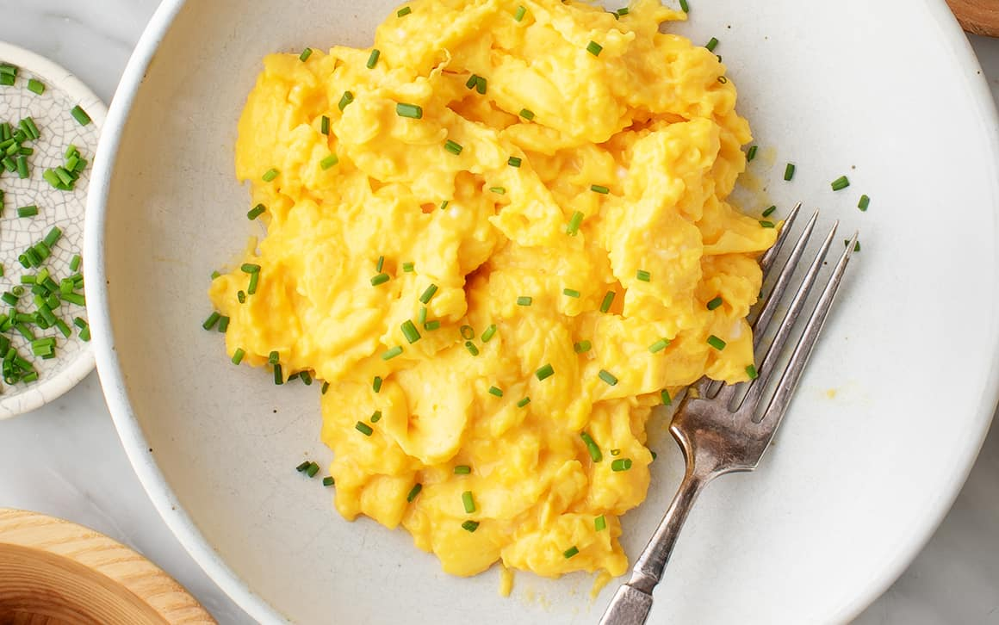

Stew Recipie

Below is a Recipie that will forever cahnge your outlook on life you will forever be a better person
Ingredients
- Aromat
- eggs
- cooking oil
Steps
- Prepare the Ingredients:
Crack 2–3 eggs into a bowl.
Add a pinch of salt and pepper to taste.
Whisk the eggs until well combined.
- Heat the Pan:
Place a non-stick pan over medium heat.
Add a small amount of butter or oil to coat the surface.
- Cook the Eggs:
Pour the whisked eggs into the pan.
Let them sit for a few seconds without stirring.
- Stir Gently:
Use a spatula or wooden spoon to gently stir and fold the eggs.
Keep stirring occasionally to create soft curds.
- Remove from Heat:
Once the eggs are slightly undercooked (still shiny but not runny), remove the pan from heat.
The residual heat will finish cooking them.
- Serve and Enjoy:
Transfer the eggs to a plate and serve immediately.
Optionally, garnish with fresh herbs like chives or parsley.
Home